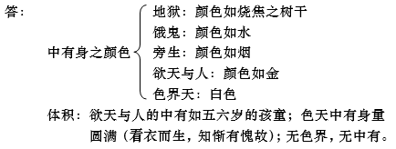
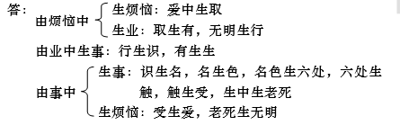

第三品分别世间品问答题
240、什么叫做欲界、色界、无色界？
答：欲界：依靠五欲妙而产生并增上烦恼为欲界，包括地狱、饿鬼、旁生、人及六欲天并器世间。
色界：功德、住所皆胜欲界，虽离欲贪但能增上自地烦恼，色相善妙，名为色界，包括四禅十七处天。
无色界：无单独住所，以无色等持未退失而死后，立即形成四名蕴（受想行识四蕴）于该处转生，为无色界。包括：空无边处、识无边处、无所有处、非想非非想处。
241、什么叫地狱、饿鬼、旁生、人、天人？
答：地狱：以非福德的业力牵引或心不欢喜，称地狱。
饿鬼：心里挂念饮食或前往寻觅，一去不复返，称饿鬼。
旁生：因为头横着行走而称旁生。
人：以意识为主，有着过多的思虑，由此而称人类。
天人：拥有喜乐或安乐，称天人。
242、什么叫做欲界二十处？什么是欲界六天？
243、哪些是四禅、四无色界，以何因而转生？
244、哪些是色界十七处？克什米尔有部如何认为？
答：初禅天：梵众天、梵辅天、大梵天
二禅天：少光天、无量光天、光明天
三禅天：少净天、无量净天、遍净天
四禅天：
凡夫住地：无云天、福生天、广果天
圣者住地：无烦天、无热天、善现天、善见天、色究竟天
印度有部与经部：承许色界十七处天，如上。
克什米尔有部：承许为十六处天，以初禅天中，梵辅天与大梵天同在一处，大梵天如处城市，梵辅天如处周边，并无二处。这样，于色界十七天中，除大梵天，为十六处天。
245、无色界有无处所？对此有何不同观点？
答：克什米尔有部：无色界无处所。
红衣部：无色界有微细色法，处于色界之上。
无垢光尊者于《如意宝藏论》中说：因无色界之色法细微，故而加以否定词，其处于色界之上。
246、无色界之心依靠什么相续下去？对此有何不同的观点？下两界之心依命根与同类吗？为什么？
答：有部：无色界之心依命根与同类（命根、同类实有）。
经部：无色界之心相续依靠业而继续存活下去。（如：以前修空无边处定，有修定之业，则后转生空无边处，其心相续则由前修定之业力而产生并存续下去。）
下两界心依于色法，不依命根与同类，原因是：下两界不离色法之想，力量微弱；而无色界心不观待色法，以等持力而离色法之想，力量强大。
247、什么是五趣？五趣自性是什么？为什么？
答：五趣：《宣说三有经》中说：地狱、饿鬼、旁生、天界、人间，是名五趣。
五趣自性是无覆无记法：
（1）非烦恼性：若五趣为烦恼性，则有圣者（有余阿罗汉）因无烦恼而不是五趣之过失。然而圣者是五趣之人趣，但其心相续并无烦恼，故五趣非烦恼性。
（2）非善法：若五趣为善法，则有断善根者因无善法而不是五趣之过失。然而断善根者定是五趣，但其相续中并无善法，故五趣非是善法。
所以五趣自性是无覆无记法。
248、中阴身为何不属五趣？
答：中阴身乃三界众生，然非五趣。因为五趣众生是已结生后之有情众生；中阴身是还未结生而前往结生处的有情众生。
249、什么叫做众生？对此有何不同的观点？
答：众生：受众多生死，名众生。
有部：众生是实有之物质。
经部、中观：众生非实有，乃蕴的一种相续假立；乃五蕴假合。
250、非天属于哪一趣？对此无著菩萨与《正念经》有何不同观点？
答：非天属何趣：
无著菩萨：非天属天趣，因为其受用及身体可与天相比；并与天人联姻成友伴；因其失去天法而称非天（即于下劣加否定词之称呼）。
《正念经》：一半属于旁生：大海以下者；一半属于天趣：大海以上者。
251、身体与识都不同的众生是哪些？为什么？
答：身不同、识不同：人、欲天及初静虑（除劫初起）。
身不同：颜色、形状及相貌均不同。
识不同：其苦、乐、舍均不同。
252、身不同、识同的是哪些众生？为什么？
答：身不同、识同：初静虑新生众生，大梵天、梵辅天、梵众天。
身不同：大梵天色殊，梵众较大梵天王身体、颜色、语言、衣裳均要小。
识相同：大梵天以梵众为己所造，梵众天、梵辅天亦以自己为大梵天所造。想法同一，故识相同。
253、身同、识不同者是哪些众生？为什么？
答：身同、识不同：二静虑。
身同：身体皆以光为自性，而且颜色、相貌、形状都相同。
识不同：正行喜乐、与未至定之舍轮番交替，若厌烦正行喜乐，则现前未至定舍；若厌烦未至定舍，则现前正行喜乐。
254、身识皆同是哪些众生？为什么？
答：身识皆同：三静虑。
身同：身体、颜色、形貌皆相同。
识同：心乐受相同。
255、何为识处？哪些为七识处？
答：识处：识以爱的方式得以增上之处；
七识处：（1）人、欲天及初静虑（除劫初起）；（2）初静虑（劫初）；（3）二静虑；（4）三静虑；（5）（6）（7）是前无色三定。
256、三恶趣、有顶、四禅为何不称识处？
答：所谓识处应当是识所乐住的地方，而且识在此处也不会被损害，但此等处能摧毁彼识。即三恶趣以痛苦坏识；四禅之无想天有无想定坏识；有顶以灭尽定坏识，所以三恶趣、有顶天、四禅天不是识处。
257、什么是众生九处？三恶趣以及无想天外的第四禅为何非九处？
答：七识处加上有顶天、无想天是有情九处。三恶趣以及无想天外的第四禅不是有情九处：因为所谓有情之处是指众生想从他处来而不想去往他处之地，但是，
（1）三恶趣众生由业力逼迫而住，非是情愿住于此。
（2）无想天外的四禅天众生心恒求出，不愿住于此处。
a、无云、福生、广果三天之凡夫，希求无想天；
b、圣者入四禅定，乐慧者求入净居（五天），乐定者求入无色；
c、五净居天之圣者，希求上面的涅槃。
258、何为四种识处？单独的识为何不叫处？
答：恶趣至有顶之间有漏四蕴为四识处，以爱而住是识处。识所住乃自地有漏四蕴，并非是他地有漏四蕴，因为识不会以爱而住于他地；亦非无漏四蕴，因为此识为有漏识。
单独的识蕴非识处，因识是住者，不能立为住所，故识非识处。如国王是能坐，坐垫是所坐，不可能国王是坐垫而成为所坐。
259、是否是七识处、四识处所摄，如何分四类？
答：（1）是七识处非四识处：七识处中之识蕴；
（2）是四识处非七识处：三恶趣、四禅、有顶之四蕴；
（3）是七识处是四识处：七识处中之四蕴（识以外）；
（4）非二：三恶趣、四禅、有顶之识蕴。
260、何为四生？请一一说明其定义。
答：《自释》中解释四生：
（1）化生：云何化生？谓有情类，生无所托，是名化生。（所谓化，就是指诸根具全，支分无缺，从无而有，顿然出现。）
（2）湿生：云何湿生？谓有情类，生从湿气，是名湿生。
（3）卵生：云何卵生？谓有情类，生从卵壳，是名卵生。
（4）胎生：云何胎生？谓有情类，生从胎藏，是名胎生。
261、请以比喻说明人类四生之理。
答：（1）化生：莲花生大士、圣天论师、劫初人
（2）湿生：我乳国王（顶生王）、芒果女人
（3）卵生：商人与鹤交生二卵，后成长老札与长老札雄（《自释》：世罗、邬波世罗，生从鸟鹤卵。母鹿生三十二子；般遮罗王五百子。）
（4）胎生：过去现在的人
262、天人、中阴、三恶趣众生有多少生？
答：天人、中阴、地狱：唯有化生。
饿鬼：化生、胎生。（鬼多是化生，也有胎生。如一饿鬼对大目犍连尊者说：“我晚上生了五个儿子，白天生了五个儿子，虽然将它们一一吃掉了，但我仍不满足。”）
旁生：四生均有。牛羊等为胎生，鸡鹅等为卵生，虫等为湿生，大鹏、龙四生皆有。
263、四生中若前前为妙，那义成王子为何不化生？地狱众生为何是化生？
答：一、《自释》：因为有极大利益的缘故，所以义成王子受胎生：
（1）接引亲属：为了引导所有释迦种族亲属共同趋入正法；
（2）接引外道：为了引导外道，让他们知道菩萨是轮王种姓，而生敬信心，从而舍弃邪道而趋入正法；
（3）接引随学者：为了令所化众生增上信心，他即是人，能成大义，我也是人，为何不能？因此而发起正精进，专修正法；
（4）遣除疑谤：如果不是胎生，则其族姓难以确定，担心别人怀疑是幻化而来的，是天是鬼无人知道……故菩萨受胎生，以息灭诸种种怀疑和诽谤；
（5）留舍利：有余师说，为了留下舍利子利益无量作供养的有情，故受胎生。
二、地狱众生受化生，原因是：业力强大的缘故。
264、什么叫中有？为何其不为来世？
答：中有：五蕴相续在死有与生有中间产生，所以叫中有。中有非为来世，因其还未到达当来之所应受生处（目的地），故不名来世。所谓当来所应受生处，是指由业力所引的异熟五蕴已经究竟分明，即是当来所应受生处。
265、大众部不承认中有，有何确凿理证破除其观点？
答：大众部说：没有中有（宗），因为从死有至生有中间有间断，也不妨害有情的续生（因），就像是镜外之面容与镜中之影像，其中间虽有间断，但并不妨害镜像成为面容的相续（喻）。
破：《自释》中云：实有诸像理不成故，又非等故，为喻不成。这里论文从两方面破大众部的比喻不成立，从而遮破其没有中有的观点：一、实有诸像理不成故，为喻不成；二、假设像成立，又非等故，为喻不成。
一、实有诸像理不成故，为喻不成（即镜像有实体，在道理上不成立，所以比喻不成立）。
总破：以一处所无二并故（在同一个位置上两个异体的色法不可能并存）。
别破有四：
（1）如果比喻中的像是实有色法，那么就会出现在同一处，镜面这个色法与“像”这个色法同时存在，但实际上因为二种色法依不同大种的缘故而不可能于一处并存，因与此理相违，所以像是实有色法不能成立。
（2）又如在一条狭窄水面上，两岸有两排色法（如树），在两岸的人，都分别看到对面树的影子遍布于水面上，水面很窄，在这一处，同时并有两树的影子被看见，若影子实是色法，则二色法不应并存于一处，所以说影像非实有。
（3）又，影和光是色法，不会同处，然而曾见过，把镜子放到影子之中，可以看见镜子中光的像显于镜面，若光的像是色法，则此色法与影子同处并存，则不应理，故说这个光的像非实有。
（4）或者说一处无二并存这个道理，镜面及月像是二，看镜面是近，月像是远，分别可见，就像是看井与井水，若是说镜面与月像于同处而生，又怎么会有远近别见，所以说诸像无有实体存在。
以上破大众部像有实体，即其喻不能成立，从而破其没有中有的观点。
二、假设像成立，又非等故，为喻不成（即假设这个“像”是实有法，但这个比喻对法来说不恰当，即喻不成立，所以理亦不成立）。
比喻不成立有二：
（1）面容与镜像不是相续：面容与像是同时有的，并无前后，但死有生有却是一个相续，前后无间于余处相续而生，面容、镜像之间没有这种前后相续性存在，与法不相似，所以这个比喻不成立。
（2）镜像由二因生：镜像是由二因而生的。一是面容，二是镜。但生有却不是依二因而起，唯是依死有，并无别的主因。所以所引比喻与法不等，故而喻不成立。
结：比喻与法不等，比喻不成立。故“没有中有”的观点不成立。
266、中有存在有何佛经教证？
答：中有教证：
（1）《宣说七有经》中云：有有七种，即地狱有、饿鬼有、旁生有、人有、天有、业有、中有有。
（2）《犍达缚经》：“若现前三处，则子住于母胎中，具足堪能、月经；父母贪爱交媾；寻香。”
（3）《达林之子经》：“汝之寻香即刹帝利种姓或……”
（4）《五不还经》：有五不还者，一者中般，二者生般，三无行般，四有行般，五者上流，中有若无何名中般。
（5）《宣说七善士趣经》：“中有涅槃有速涅槃等三种。”
以上教证均可成立中有存在。
267、何为寻香？若大众部不承认此等经典，怎么办？
答：寻香即中有。中有食香，名寻香也。
大众部言五蕴灭尽是寻香，实不合理，引《达林之子经》教证，中有有种姓等，而五蕴灭尽之法何来种姓。另《五不还经》中，亦说有中般涅槃，即于中有时而般涅槃。又《宣说七善士趣经》中亦说：中般涅槃分为迅速般涅槃、非速般涅槃、经久般涅槃。故知中有存在，若不承认，则无奈何。
268、你自己有何中有存在的教证、理证？
答：阿罗汉以神通观水，遍满中有。《俱舍论》：中有与当来本有相同。特殊情况：密法中，中有前半与前世同；中有后半与后世同。亦有：一格西忆中有时，为一妇女骑牦牛而投胎。
269、中有、生有、死有、本有之间有何差别？
答：中有：死有之后、生有之前的五蕴。
生有：结生时那一刹那的五蕴。
死有：死亡时那一刹那的五蕴。
本有：死有前、生有后之五蕴或四蕴。
270、关于中有期间的时间长短，有何不同观点？
答：（1）世友尊者说：七天；
（2）亦有说：七七四十九天；
（3）经部及大乘：时不固定，观因缘而定：
a、多杰江参：久无投生之处（见《前世今生论》）；
b、转轮圣王：需要观待人寿八万岁时才能结生；
c、冬天死，业力牵引需投生为牦牛，等到夏天才能结生。
271、中有身的颜色、体积等如何？

272、以何眼能见中阴身？如何辨别真假（说神通者）？
答：同类眼：同类中有身可以互见。
天眼：修得之天眼可见，非俱生之天眼。
辨真假：
俱舍：具修得天眼者当能除睡眠、欲贪等。
密法：有些密法，咒语之修持亦可得如此之天眼，但亦不一定须除睡眠，所以不可一概而论，不可说具天眼则定无睡眠，也不可说有睡眠者定无天眼。
273、中阴身为何不能穿越母胎与金刚座？
答：中有不能穿越母胎：业力强大的原因，入胎后不能出；亦不能穿越金刚座：因金刚座乃千佛成佛之处，具极大加持。
274、中阴身业力可转否？有何不同说法？
答：（1）俱舍论观点：中阴身业力不可转，因为中有与当来本有是同一业力所牵引的缘故，若中有起，则必定生当来本有。那么若做功德善事回向，不能令该众生于中阴身直接解脱，只可令其于恶趣少受苦或于恶趣速得解脱。
（2）大乘观点：若遇善知识超度，有马上解脱的机会，即于中阴也可解脱，也就是说中阴身业力是可以转变的。
275、中阴身是如何结生的？
答：胎卵生者：以颠倒心欲行淫而结生。
湿生：因染著香气而结生。
化生：因染著住处而结生。
276、《俱舍论》、《善护商主请问经》、《阿难入胎请问经》等对中阴的描述有何不同？
答：《俱舍论》：
中有为男：于母起淫欲心，于父起恚心。欲与母交，而往入胎，入胎后于母右侧，面背而坐。
中有为女：于父起淫欲心，于母起恚心，欲与父交，而往入胎。入胎后于母左侧，面腹而坐。
湿生：染著香气而受生。
化生：染著住所而受生。
《阿难入胎请问经》：（1）转生善趣者：有福报者，见宫殿想进入、宝座想去坐，便前往而生；（2）转生恶趣者：无福报者，见暴风雨，欲避便前往而生，见众聚，欲前往便生。
《善护商主请问经》：（1）转天人：见天子天女戏乐，欲往便生；（2）转生为人：见人戏乐，愿去过生活，则转生；（3）转生地狱：中阴觉得冷，见地狱猛火，欲暖便前往而转生；中阴觉得热，见地狱寒冰，欲凉便前往而转生。
277、你变成中阴身时如何打算？
答：我们变成中阴身时，在密法中应观自己为种子字，观父母为上师佛父佛母，并发愿自己入胎后，将来真正成为一个密法有缘者。
278、若中有显现本有像，佛之母为何梦六牙白象？此六牙白象是中有否？
答：佛之母梦六牙白象乃是吉祥瑞相，并非中有之形象，菩萨久舍旁生趣故，菩萨中有如盛年时，形量周圆，具诸相好，故住中有得入胎，照百俱胝四大洲等。所以说六牙白象只是瑞兆而已，不是菩萨入胎时的中有。
279、转轮王、独觉、佛陀、凡夫，如何了知入、住、出等差别？
答：转轮王：知入胎，不知住、出胎，福德广大故；
独觉：知入、住胎，不知出胎，智慧广大故；
佛：知入、住、出胎，福慧极广故；
凡夫：不知入、住、出胎。
另：亦有卵生独觉，即众部独觉，入、住、出胎三皆不知。
280、如果心非父母精血生，为何有些人之性格与父母相同？
答：有情结生的时候，前世之心刹那相续而生后世之心，所以说前世之心是后世之心的因，即这个心识并非是父母精血所生。但有情的色身是依父母精血而生（对此《自释》有二释），心身相依不离。既然身依精血而生，那么对于心生，精血虽不是因但可以是缘。如种子是因，以如是种子生如是果；田地是缘，虽不能改变种子所生果的性质，但却能影响种子所生果实的甜苦等。同样，精血作心的缘，可以对心有很大的影响，再加上后天的熏染，孩子性格与父母相似就并不奇怪了。
281、前世身之伤疤为何今生人身上还在，有何教证？
答：前世身上的伤疤，在今生的身上还存在，这是一种业力缘起的显现。在《中观四百论大疏》中有一个比喻，说在房顶上有一只灰白色的鸽子，屋内有一碗酸奶，虽然鸽子并未踩到酸奶上面，但酸奶上却可以出现鸽子的爪印。因为一切法其性是空，所以在因缘聚合之时即可显现。酸奶上的爪印是这样，身上的伤疤同样如此。《俱舍论》承许是烦恼与业的牵引而令诸蕴由前世而今生，由今生而后世地轮回流转，并没有常我存在。有的只是于诸蕴之上假立的“我”，那么是何业力可以令前世与今生的身上都存在同样的伤疤呢？在第四品业品中，经部承许一业可以引多世，那么就这样一个理论而推想，可能此有情于宿世中对他有情做过某种伤害之业，以此一业而引多生的身体之上出现同样的伤疤（当然业因果最不可思议，唯佛陀才能彻知，所以此处只是姑且以理推之，或许有这样的可能）。所以说爪印及前后世身上的伤疤，皆是因缘和合、业力缘起的结果。
282、依靠密宗窍诀，人在死后入胎时有何特点？
答：密宗：于中有时，观父母为本尊；观自己心为：
（1）若愿智慧广大，则明观为“德”字；
（2）若愿能力广大，则观为“吽”字；
（3）若愿悲心广大，则观为“舍”字。
283、若无我则依何转生轮回？
答：外道执著有一个我，是这个我能够舍弃此生的五蕴（或四蕴）而续后世的诸蕴。如果没有我那么依靠什么来转生轮回呢？世尊说：“有业有异熟，作者不可得。”也就是说，并没有一个实有的我在造业感果，但是可以于这个五蕴之上假立一个“我”，唯有诸蕴，也即是这个假立的“我”在转生轮回。
284、中有到生有之间如何流转？
答：是由烦恼与业的牵引令中有五蕴相续入胎而现前生有的，五蕴是刹那灭的，如何流转呢？就像灯火（光明）一样，虽然刹那灭，但灯火（光明）可以转到别的地方去而照亮黑暗。此处油可以比喻烦恼与业，而灯火（光明）可以比喻五蕴，是油的注入灯芯而令灯火（光明）相续不断，同样，五蕴也是因为烦恼与业力的次第牵引而相续转变，乃至也是由烦恼业力牵引而趣入后世，所以说从中有五蕴到生有五蕴的流转，完全是烦恼与业的牵引所致。入胎后，成凝酪等住胎五位，出胎后成在生五位，于此十位即本有又以烦恼而造业，于死有后起中有，又投生后世生有等周而复始，无有穷尽。
285、轮回无始无终否？
答：总的轮回无始无终，但分别的个人之轮回，无始有终。
286、什么是十二缘起？三世中如何圆满？
答：十二缘起：前世、今生以及后世蕴的相续流转之轮回即是指从无明至老死之间的十二缘起。
缘起：因、缘、果聚合后真实出现，称缘起。
十二支：无明、行、识、名色、六处、触、受、爱、取、有、生、老死。
三世圆满是指于三世中，一有情经历十二支任何一支而无缺，若有所缺，则不说圆满。
287、按有部观点，十二缘起如何解释？
答：有部宗说：佛陀唯是以分位缘起而宣说十二缘起，所谓分位缘起是指于十二支中，每一支皆具足五蕴，因在那一分位上“无明”是主要的，就以“无明”来称呼那一分位之五蕴，乃至“老死”之分位，老死最主要，则称此分位五蕴为“老死”。就如同说国王出行，并非无随从，因为国王最主要，所以只说国王出行即可。
288、请你对应自身宣说十二缘起。
答：十二缘起：
（1）无明：前世烦恼现行阶段的五蕴，也就是烦恼。
（2）行：前世造善等三业阶段的五蕴，即是业。
（3）识：今生结生到母胎中刹那的五蕴。
（4）名色：从结生刹那起到显露出六处之前的五蕴，名是指受想行识，只有名称无有阻碍故；色则指凝酪等。
（5）六处：对境、根、识三者聚合到享受外境之前的五蕴。
（6）触：从根境识聚合后完全断定对境起到能了知乐、苦、舍之境，并取舍为喜欢、不喜、中等以前的五蕴。
（7）受：从能取舍三种感受起到不能行淫之前的五蕴。
（8）爱：未真实享用欲妙、行淫欲事、寻觅对境之前的五蕴。
（9）取：为了获得成为爱之对境的受用而到处奔波时的五蕴。
（10）有：奔波者造作产生后世苦乐等果善不善业因阶段的五蕴。
（11）生：从此世死去而结生到后世时的五蕴。
（12）老死：处于三际中间的今世所留下的后世的名色、六处、触、受四者。
众生皆以无明、行乃至老死，此十二缘起而轮回不息。（此处是指在欲界中能够圆满此十二缘起者说。）
289、有部与经部以上，对十二缘起的认识有何不同？
答：有部：十二缘起唯是分位缘起，即每一分位皆具足五蕴，以“无明”等主要的缘故而称“无明”等支。
经部以上：每一支并非是具足五蕴，以“无明”等主要而称无明。原因是无明为无知痴心所，行是思心所，“无明”等也并非是因主要而称无明，若说主要，那么只说识就可以了。所以各支以各自的本意而说，不包括所有的五蕴。
290、《俱舍论自释》中四种缘起是什么？请分别说明。
答：《俱舍论自释》中说有四种缘起：
（1）刹那缘起：以杀生为例，在刹那间（约成事刹那说）由贪心而行杀生，即具足十二支，痴心所即是“无明”；思心所即是“行”；对于所杀境了别名“识”（以贪心行杀，贪心起则痴心所必起，大烦恼地法故；思心所必起，遍大地法故；识亦定起，了别境故）；色、想、行三蕴与识俱起称“名色”（色蕴取不离根之色香味触四境，想蕴全部，行蕴取作意心所等）；眼等五根令名色安住，说名“六处”（此五根为六处摄而说六处）；六处即是根与境识三合和而有“触”（心所）；领纳触名“受”；以贪心行杀，贪即是“爱”；与爱相应诸心所名“取”；起身语二业名“有”；如是诸法起的时候名“生”；诸法熟变坏灭时名“老死”。这就是十二缘起于刹那间全部具足，名刹那缘起。
（2）连缚缘起：因果无间前后相连而起是连缚缘起。
（3）分位缘起：即十二支每一分位皆具五蕴，以“无明”等主要故而称“无明”等支，即三世十二支五蕴分位，是约顺次生受业及不定受业而说的。
（4）远续缘起：前面所说三世十二支分位，约顺后受业与不定受业而说，即三世因果之间可隔开许多生。而圆满十二支分位，是远续缘起。
291、有部说十二缘起是五蕴不同阶段，为什么又说“无明”等？
答：有部说十二缘起是五蕴之不同阶段，又说“无明”等，是因为，如于“无明”支，是因为其中无明最强盛故，于彼同时俱有之五蕴也随“无明”一起被称为“无明”支，如国王行，非无导从，以主要是国王，故称国王行。
292、十二缘起分三世说，有何必要？
答：十二缘起分三世是为遣除众生之三际愚痴。
一、前际愚痴：（1）我是否已生（怀疑我是有是无）；
（2）生了什么样的我（怀疑我的自性，即此蕴是我或离蕴有我）；
（3）“我”如何而生（怀疑我的差别，到底是常我或是无常我）；
二、后际愚痴：（1）“我”未来产生与否（怀疑我未来是有是无）；
（2）产生什么样的我（怀疑我的自性）；
（3）“我”将如何产生（怀疑我的差别）。
三、中际愚痴：（1）何等是我（怀疑我的自性）；
（2）此我云何（怀疑我的差别，常？无常？）；
（3）“我”谁所有（谓怀疑我之因，此现在这个我，在过去是什么因所有？）；
（4）我当有谁（怀疑我的果，谓此现在我，将来会有什么样的果？）。
293、十二缘起归纳为哪几个法中？分别为何？
答：十二缘起可归纳于三法中，烦恼、业、事；或二法中，因、果。
294、前际后际缘起如何安立各自的因果？
295、前际后际略因果怎样推出中间或今世之略果？
答：前际略因是无明、行，此二与中际之因爱、取、有相同，即中际之因也可以说为无明、行，即中际之因也可以是略因；
后际略果是生、老死，此二与中际之果识、名色、六处、触、受相同，即中际之果也可以说为生、老死，即中际之因也可以是略果。
296、若十二缘起数目确定，则无明无因，老死无果，那么轮回有始有终？

十二有支规律如上。
其中名色、六处、触、受即是老死，爱就是无明，受中可生爱，那么老死可以生无明，即老死是无明之因，无明是老死之果；所以无明有因，老死有果，十二缘起无前后际，即轮回无始无终。
|
烦恼 无明 |
业 行 |
事 识 |
事 名色 |
事 六处 |
事 触 |
事 受 |
烦恼 爱 |
烦恼 取 |
业 有 |
事 生 |
事 老死 |
297、若前世造业，中间过了许多世以后成熟，难道不是错乱了缘起规律吗？
答：并非错乱，十二缘起三世圆满，因造业有顺后、顺次生及不定业，所以三世不一定连续，但是中间将三世隔开的是别的缘起，并不会令此十二缘起错乱。
298、经中所说缘起、缘生之义是什么？
答：缘起：每一支其能产生后世的因支分是缘起，由此而产生一切果支分故；
缘生：每一支其成为以前之因所生的果支分是缘生，由因支分中所生之故。
十二支每一支都具有缘起与缘生，即因果二义，缘起是因义，缘生是果义。但每一支若观待何法是何因则观待彼不是果；若观待何法是果则观待彼不是因。如一个人若观待其儿子是父亲，则不会是儿子的儿子。
299、经部宗对有部十二缘起解释有何观点？主要表现在什么方面？
答：有部：（1）十二缘起各支皆具五蕴，以“无明”等最胜故，而立各支之名为“无明”等。
（2）世尊所说唯是分位缘起。
经部：（1）应有四种缘起：刹那、连缚、分位、远续。分位缘起只是其中一种。
（2）十二缘起应以各支本义而说即“无明”等不是五蕴，实际上无明为无知心所，行是思心所等，若按有部，因无明主要而立“无明”名，实际上若论主要识最主要，那么每一支只讲一个识即可以了，显然不应理，所以每一支应依其本义而解释，并非如有部所说。
300、请以比喻说明“无明”之本体是什么？
答：无明之本体：无明是能够如实了达的智慧之违品，是不明三宝、四谛、业果之理的一种心所，是别有实体的他法。无明是智慧（即明）所对治的一种有实体的法，而并不是说无觉知（即不是明的或明以外的）就说是无明，也并不是明的体不存在（即明无）就说是无明。
如：亲与非亲，亲是亲人，非亲则专指怨敌，有实体，
（1）并不是亲人之外的皆是非亲；
（2）亦不是无有亲人是非亲。（若无有亲人是非亲义，则非亲无有所指。）
真实语与妄语：妄语是真实语所对治的，
（1）并不是说真实语以外的就是妄语；
（2）也并不是说真实语不存在就是妄语。
法与非法：非法是法所对治的，
（1）并不是法之外皆是非法；
（2）亦不是无有法称非法。（若是这样，则非法无实体。）
301、若“无明”是不知觉而已，则有何等过失？
答：若无明是不知觉，则没有知觉的法，皆是无明，也就是说无实法，无情法等都成了无明，也就是除了知觉（明、智慧）之外的法都是无明，这样就不应理。实际上“无明”是明所对治的一种有实体的心所法。
302、经部观点，佛经中有何定义？（不知前际之心）
答：经中说：“若有无明，则有行，若有行，则生识等。”与前际若有则生现今，现今已生，则生后际的说法是一致的，经部不像有部那样，认为无明等是五蕴，而是从无明等的本义来解释，即无明是无知心所（痴），行是思心所等。
303、若许无明是劣慧坏聚见，又有什么过失呢？
答：第300题已说无明是智慧所对治的一种心所法，别有实体，那么无明的体是什么？
有的论师说：无明就是劣慧坏聚见，就像坏妻子而名无妻子。
（这里补充一点，劣慧分二种：（1）五种染污见是劣慧，说劣慧坏聚见是代表这些有见的劣慧；（2）不是有见而与贪等相应的慧亦是劣慧。）
论主破：无明不是劣慧（坏聚见），因为这些劣慧中有见故，即这些慧是恶见慧，见是有推度分别性的，而无明无知不明了，所以无明不会是见；劣慧中有见，所以无明不会是劣慧（坏聚见）。
那位论师又说：那么无明是不具有见而与贪等相应的劣慧。
论主又破：也不是这样的，无明与见相应故。意思是说，无明心所起一定与见相应，见就是慧心所，若说无明是劣慧，则会有两个慧心所俱起的过失。就像决不会有苦、乐二受俱起一样，二慧是不会俱起的。所以说无明不是劣慧（坏聚见），亦不是不具见而与贪等相应的劣慧。
另外经里说：“无明染慧，令不清净。”若无明是慧，则有慧自己染污自己的过失，所以无明与慧决定是他体方说能染，即无明不是慧。
304、前辈论师对无明有什么不同认识？
答：世友论师：所有烦恼称无明。
法护论师：无明为我慢。
法称论师：无明非萨迦耶见，因为一切过失由萨迦耶见生。
305、请用比喻来说明“名”的概念？
答：名为四蕴：受想行识非色法的四蕴。此四蕴叫做名是因为与名相同而趣入意义之故。即此四蕴皆以外在所表达的名称而了知其内在的意义，就如：（1）色法须以名字而了知其为何物；（2）以婆罗门等而了知其为何种姓。
306、《自释》中对六触有何解释？
答：有部：触有六种，所谓眼触乃至意触。此复是何？三合所生，谓根境识三和合故有别触生。（有部：三和合外，有触心所的实体存在。）
经部：有说三和即名为触，彼引经证，如契经言：如是三法聚集和合说名为触。（经部：根境识三和合当体就是触，其外无触心所之实体存在。）
307、什么是三类触？切合自身说明。
答：（1）明之触：无漏智相应触，如见道后之根境识三和合所生触；
（2）无明之触：与烦恼相应触，见道前无始劫来根境识三和合与烦恼相应所生之触，如与贪心烦恼俱生之触；
（3）二者以外触：与剩余的有漏善法相应之触，如非出离心、菩提心摄持，而是以求人天乐果之心摄持之念诵、闻思等触；及无覆无记相应触，如与威仪路心相应触，如走路、吃饭时。
308、身受与心受之差别是什么？分哪十八种？
答：身受：五根触所生受是身受。五根是有碍色法，说身受，身代表色法。
心受：意根触所生受是心受。心受分十八种：心受有意苦、意乐、舍三种，以此三受分别缘六境皆可生起此三种受，由此总共可以生十八种心受（意近行）。
309、欲界、色界、无色界有哪些受？
答：欲界有十八种心受（意近行）：
缘欲界十八：三受缘六境；
缘色界十二：三受缘四境；
缘无色界三：三受缘一法境。
色界：
（1）初禅、二禅有十二种心受（意近行）：
缘欲界十二：二受缘六境，无意苦受；
缘色界八：二受缘四境，无香、味二境；
缘无色界二：二受缘一法境。
（2）三禅、四禅有六种受（意近行）：
缘欲界六：舍受缘六境无意苦，亦无意乐受；
缘色界四：舍受缘四境；
缘无色界一：舍受缘一法境。
无色界：唯空无边处未至定可以缘第四禅境。
（1）空无边处未至定：四舍受
缘四禅四：舍受缘四境；
缘无色界四正行及三未至定一：舍受缘一法境。
（2）四正行及三未至定：四根本不缘下地、三未至定不缘色，唯缘无色一：舍受缘一法境。
310、烦恼、业、事由哪几种比喻来如何说明？
答：（1）烦恼：如种子，龙，树根，树木，糠秕。
如种子：种子生出茎、叶、果，同样，烦恼中生烦恼、业、事；
如龙：有龙在，大海不会干涸，同样有烦恼在，三有大海不会干涸等；
如树根：树根未断除，就会长出树叶，同样，烦恼之根未断，就会产生轮回；
如树木：树木中复生叶等，同样，烦恼中能再度产生业与事；
如糠秕：具糠秕之果实中，能产生出苗芽，同样，具烦恼之业中能生果实。
（《自释》：如糠秕米，能生芽等，非独能生，惑得裹业能感余生非独能感。）
（2）业：如糠秕之果、药、花：
如糠秕：具糠秕之米能生苗芽，同样，业由烦恼包裹才能生果；
如药：如药只能发生一次性作用，同样，业也只能产生一次异熟果；
如花：花是果之近因，同样，业是事之近因。
（3）事：如烹好之饮食。如煮好之饮食是所享用的，享用完了就没了。同样，七事也是所享用的，而不会再产生其他异熟果。
311、什么是四有？它们的本体是什么？在三界都有吗？
312、食有几种？为什么叫食？
答：食有四种：即段食、触食、思食、识食。能资益有情身心，并令在世间生存之法叫做食。
313、解释四食之含义？
答：段食：以香味触为本性，依鼻舌身一口一口吞下之食物，故而得名，欲界有，色界、无色界无。
触食：根境识三聚合之外，另有实法名触，其中可意之触可以资益身心，是触食，触食为有漏。
思食：有漏之思，随着对可爱境界的欲求而转，能起到相当于食的作用。（思谓意业，见《自释》。）
识食：有漏识执持此身心，由生至死而不舍，从其能资益延续有情生命说，也起到相当于食的作用。（识谓识蕴，见《自释》。）
314、色处为什么不叫段食？
答：（1）色处不能资益眼根（凡食当能资益自根）。凡段食以香味触为体，此香味触，吃下去后必先利益其所对之自根大种后利益余根。而色处为眼根对境，把色处吃喝下去，如把一个绿色吃下去，并不能资益眼根大种，更不要说别的根了（眼根见它而生喜乐，是触食的作用非色为食）。
（2）色处不能利于解脱者：离欲圣者（不还者及阿罗汉），见饮食的颜色而无贪，无贪则色境并无益，于此身心。虽于香味触亦无贪，然而食之可益于身。
315、《自释》中思食有何不同的观点？你是怎么认识的？
答：《自释》中：《集异门足论》说：大海中有一种大的众生（应是乌龟），母亲上岸在沙滩上生卵，又回到大海中。母生卵于岸，母亲若思念卵，卵则不坏，不思念则卵就会坏掉了；
论主说：此不应理，这违反了食的意义，怎么可以说别人的思食却能持自身，实际上应当说，卵常思念母亲而不会烂坏。
由此可见，思食亦是可以令生命延续的。
316、中有有哪些不同名称？
答：中有亦名意成、求生者、寻香、中阴、现成（起）。
317、四食对今生来世起何作用？
答：段食：能资益增长心、心所的所依，即包括根在内的身体。
触食：能增上能依的心、心所；主要是为了生在此世间而宣说段触二食。
思食：能引后世。
识食：识由业力牵引而形成后世，这是识食，主要从产生世间而宣说了后二识。
318、断善根等识属意识或根识？为什么？
答：断善根、续正见，入定、出定、死生之心皆是意识。因为这些多数是分别念，所以属意识，而于根识中不存在分别念，所以不属根识。
319、生心死心为何为等舍心？一缘心、无心为何无有？
答：（1）死心生心不明了，所以依舍心；
（2）死心生心不会于一缘中产生：死心不会于一缘等持中，因死堕害于心，而一缘等持益于心；生心不于一缘中，因为生有烦恼性，等持是善性；
（3）死心生心不会于无心位中具有：因为在无心位时，命一定不会有损，若要趋入死亡，必然先起心之后命终；在受生的时候也不会无心，因为受生必须要有因，无心则无因，所以说受生一定是先起烦恼心，否则不会受生。
320、六道众生、阿罗汉死时心灭何处？《大乘阿毗达磨》有何不同观点？
答：化生，顿死者：意与身根同时灭尽；
转三恶趣者：于足下识最后灭尽；
转人天者：于脐间；
转阿罗汉者：于心间意识迁移。
《大乘阿毗达磨》：
若转善趣：根识由下向上收，于上方离开；
若转生恶趣：根识由上方向下收，于下方离开。
321、造五无间罪者与圣者死后趋于何处？余众生呢？有何教证？
答：造五无间罪者，死后堕地狱。
圣者死后获无余涅槃。
一般众生所趋不定。
教证：《四百论》：“由于诸人类，多持不善品，以是诸异生，多堕于恶趣。”
322、风轮、水轮、金轮如何形成？
答：风轮：下方之基最初时是虚空，形成世界前微风四起，多年之中狂风不断，从而形成金刚亦无法摧毁之风轮。
水轮：风轮上方，雨流宛如车的主轴一般降下，依之形成具金子精华的水轮。
金轮：在水轮上方，依靠风搅拌这些水，致使变得极为坚硬，依此而形成金刚大地。
323、七大金山是哪些？何故如是得名？
答：七大金山：
持双山：山顶美观如见而生喜之车轭
持轴山：如金轴般
担木山：有沉香林严饰
善见山：山顶有见而生喜之饰
马耳山：如马耳形状
象鼻山：山顶形如象鼻
持边山：山顶状如轮辐
324、九大山由何元素组成？如何存在？
答：七金山由金子组成；
铁围山由铁组成；
须弥山四种珍宝组成：东方：由银子组成；南方：由琉璃组成，所以南赡部洲的天空为蓝色；西方：由红宝石组成；北方：由金子组成。
中间是须弥山，七金山环绕须弥山，之外是四大洲，洲之外是铁围山。
325、九座山的高度是多少？
答：九山均有八万由旬没于水中，依金刚大地。
九山露出水面上方的高度分别是：
须弥山：八万由旬； 持双山：四万由旬；
持轴山：二万由旬； 担木山：一万由旬；
善见山：五千由旬； 马耳山：二千五百由旬；
象鼻山：一千二百五十由旬；持边山：六百二十五由旬；
铁围山：三百一十二点五由旬。
八山高度由内向外，较须弥山一半一半地递减。
326、内海宽度、深度多少？内外海的差别是什么？
答：须弥山至持双山乃至持边山之间的七个间隔处是七香海，称内海。第一个间隔须弥山至持双山之间的宽度为八万由旬。持双山东西两岸是其海面宽度的三倍，即二十四万由旬。持双山至持轴山乃至象鼻山至持边山之间的海面宽度半半递减。四万、二万、一万、五千、二千五百、一千二百五十由旬。此六海的东西等四边后后较前前越来越远。持边山至铁围山之间所有的水即是外大海，宽三十二万由旬。周边有三亿六十万七百五十由旬。此外海水充满盐味，而内海水具凉、柔、轻、香、澄、无臭、饮时不伤喉、饮已不伤腹八种功德。
327、什么叫南赡部洲等四洲？并说明它的形状与位置。
答：四洲皆处于外海，其外是铁围山。
南赡部洲：因赡部树果落入海中发出“赡部”的响声，故称赡部。是边缘为水环绕的洲，故称南赡部洲。
位置：位于须弥山南部。
形状：如马车形或肩甲骨形。
（注：三边各二千由旬，最小边为三点五由旬。）
西牛货洲：享用如意牛与珍宝（以如意牛做交易）。
位置：位于须弥山的西面。
形状：圆形。直径二千五百由旬。周长七千五百由旬。
北俱卢洲（声不美洲）：此洲的众生死时七日前出现难听的声音，因而称为声不美洲。
位置：位于须弥山的北面。
形状：四方形。各边等各为二千由旬。周长八千由旬。
东胜身洲：位于此洲的人的身量超过南赡部洲人的两倍，因此称为东胜身洲。
位置：位于须弥山的东面。
形状：如半月形。半圆形的边各二千由旬，最小边三百五十由旬。
328、八小洲分别为哪些？位置与《大圆满前行》中有何不同？
答：四大洲每个洲分别有两个附属洲，共八小洲。
附属南赡部洲之二小洲：拂洲与妙拂洲。
附属西牛货洲之二小洲：行洲与胜道行洲。
附属北俱卢洲之二小洲：声不美洲与声不美月洲。
附属东胜身洲之二小洲：身洲与胜身洲。
四大洲与八小洲，皆是人类居住的地方，其中拂洲乃以罗刹居住，称罗刹国，但也有人居住。
《大圆满前行》中供曼茶时，四大洲中以东方作为自己一方或供养对境的方向，各大洲附属的二小洲皆在大洲的两边，与大洲同样的方向面向须弥山，背对铁围山。而《俱舍论》中，靠自己一方是南方，对面是北方，其他并无不同。
329、关于“无热恼海”是否是“马蓬应措湖”的观点，萨迦、噶举各有何不同观点？
答：米拉日巴尊者有些文集中说：“我所住的山就是《俱舍论》所说的雪山。前面的‘马蓬应措湖’就是‘无热恼海’。”（“马蓬应措湖”在藏地靠近拉萨与阿里处，一个长形的湖；雪山就是冈底斯山，有些人说这就是《俱舍论》中所说的由印度金刚座向北越过九个黑山后所出现的那个雪山，而萨迦班智达却对米拉日巴尊者的说法进行了批驳：
既然说冈底斯雪山是《俱舍论》中所说的雪山，那么由印度金刚座向北越过九个黑山，出现这个雪山，但这九个黑山又是什么？《俱舍论》中提到的“无热恼海”是边长五十由旬的正方形海，而现在这个“马蓬应措湖”都是长方形的，怎么会是“无热恼海”？所以说不符合教理和逻辑。
对于这样的批驳，噶举派的噶玛巴尊者对米拉日巴尊者的密意进行了解释说：尊者所说的很可能是瑜伽士境界中的一种描述，不一定就是指《俱舍论》中的“无热恼海”和雪山。即使指的是论中的“无热恼海”和雪山，也是可以的，因为依靠众生业力显现，现量可见的雪山和“马蓬应措湖”，而对其进行修饰也不是不可以的。也不必完全符合论中所说的形状和距离，如：印度的“灵鹫山”，有些佛经中说是珍宝组成的，有千万由旬，非常高大，但现在所见的“灵鹫山”并非珍宝组成，也不是很高大，只是一座平凡的山，所以说佛经中有一些说法有一定密意，因此对尊者的说法一味进行否定，也不一定合理。
另外，民间传说中也有将“马蓬应措湖”说为“无热恼海”，冈底斯雪山说为是《俱舍论》中的雪山，这些说法是有的。由此可见，尊者的说法也有可能是站在民间的说法上，而不一定要完全符合论典。
对于以上辩论的意义，可以做这样的理解：
有些说法，是论典中宣说的；有些是民间的说法；有些是对不同根基众生的描述；有些也许是诗学上的夸张描述，所以说一种说法，可能并不完全符合其他说法。
330、八热地狱、八寒地狱有哪些？
答：八热地狱：
无间地狱：转生此处的众生无间感受无量痛苦，故称无间地狱。
位置：南赡部洲下方二万由旬有无间地狱的房顶。高度与广度各两万由旬。
其上才有七地狱：复活地狱、黑绳地狱、众合地狱、号叫地狱、大号叫地狱、烧热地狱、极热地狱。
八热地狱周围有十六个从属地狱：煻煨坑、尸粪泥、利刃原、剑叶林（每边都有四个）。
（铁柱山、无滩河、剑叶林是一类，算一个。）
八寒地狱：具疱地狱、疱裂地狱、紧牙地狱、阿啾啾地狱、呼呼地狱、裂如青莲花地狱、裂如红莲花地狱、裂如大莲花地狱。
331、《俱舍论》之观点，地狱、饿鬼主要位于何处？大乘有何观点？
答：按《俱舍论》的观点，八热地狱、八寒地狱皆位于南赡部洲之下，饿鬼的根本住处是王舍城，位于南赡部洲下间隔五百由旬处，饿鬼有三十六种，可归纳为外障、内障、食障三种，天界、人界亦存在散居饿鬼，在地狱中有阎罗法王。
以《俱舍论》观点，阎罗法王是不善引业所牵而来，以善满业而感为地狱众生显示业果。而以大乘观点，阎罗法王形象是地狱众生，实际是诸佛菩萨化现出来度化众生的。
关于小乘认为地狱有具体固定处所，大乘亦不承许，大乘（唯识、中观）认为众生死于何处，以业力而于当下现前地狱狱卒及兵器等，并由之感受痛苦。
332、《俱舍论》之器世界观与现代科学之宇宙观，有何不同说法？有何教证、理证、比喻，举例说明互不相违之观点？
答：据堪布仁波切在一次课堂上讲话的录音整理，来作为对此问题的回答。
须弥山存在吗？
对于宇宙的认识，现代科学与《俱舍论》有着截然不同的观点。然而，不同的观点是否彼此相违，确实是一个非常关键的问题，因为这关系到许多佛教徒能否因此而树立起真正的信仰。在座的诸位从小就接受了所谓的科学教育，想必一直都在认为地球是圆形的球体，然而现在学了《俱舍论》，其中又宣说了须弥山及南赡部洲的观点，那么，地球与须弥山这两种观点，是彼此相融还是互相矛盾呢？关于这个问题，在这里跟各位稍微作一些讲解，如果不讲，我想有些人可能因此而发生邪见。听说有一位法师，闻思等各个方面都还可以，但是学习了《俱舍论》之后，认为须弥山与现代科学相违，并且以肉眼也无法现量见到，因此便对佛教生起了邪见，并发表了一些不如理的文章，所作所为也不太如法。对此，学院有些堪布也专门对其文章以及行为作过批驳。也许有人会问：“一位闻思多年的法师，为什么没有正信？为什么还会发生邪见呢？”其实，这是因为他的闻思不够全面，也没有形成一个体系。如果闻思没有究竟，不要说广大甚深的法理，单单一个须弥山的观点，恐怕许多人还是无法接受。因此，广博的闻思不仅是实修佛法的前提，也是佛教徒引生正信的基础。那么，到底有没有须弥山呢？如果有，又是如何存在的呢？这个问题很值得探讨，而且也希望能在各位的相续中生起真实的定解。
去年冬天，我们学习了前世后世的道理，之前，对于前世后世的存在与否，许多人一直深怀疑虑，在宣讲了《前世今生论》之后，即使有人还是不能接受，却也拿不出任何反对的理由。前世后世是佛教与科学最大的一个关注点，而承认前世后世，则是人类真正开始认识内在身心的一个关键。因此，这个方面的学习和研究是很有必要的。然而，现在我们要研究的是另外一个问题，也就是如何看待外在的器世间，即如何理解佛教与科学不同的宇宙观。对于外器世间的生成、存在与毁坏，佛教与科学有着不同的解释，当然，若要精通此理，仅凭少许的智慧恐怕难以实现。但是，作为一个佛教徒，若能通达其中的一些基本道理，则对修行会有很大的帮助。
下面简单介绍一下《俱舍论》与现代科学对于器世间的不同观点：
《俱舍论》认为：整个器世间，首先是风轮，风轮之上是水轮，水轮之中是金刚大地，之上则排布着以须弥山为主的九山以及四大部洲和八小洲等，诸山与几大部洲等就如莲花生长在海中一般，而六道众生就生存于这样一个扁扁的世界之上。
现代科学认为：人类与旁生的居住地就是地球，是一个圆形的球体。
上述不同的两种观点，哪一个是对的，哪一个是错的呢？作为佛教徒，理应信受须弥山等的存在，然而，因为无法现量见到，所以许多佛教徒也是非常为难。（有人说西牛货洲就是美国，但这是肯定不对的，因为西牛货洲都是人寿千年；也有人说须弥山等不存在，因为看不见所以不存在，然而这种推理存在着明显的缺陷。）那么，须弥山是否存在呢？如果承认了须弥山，是否一定要否定地球呢？对此，我们的观点是：二者都可以成立，既承认须弥山的存在，也承认地球的存在。
首先，我们并不否认地球的存在。说地球不是圆形或说地球不存在，这在天文学家面前是说不过去的，因为他们认为地球是圆形，并非毫无根据。相反，科学家们通过各种各样的先进仪器，以各种方法进行观察，并登陆月球，从月球上以及太空中，经过很长时间的观测、考证，以足够的证据，早就证明了地球是一个圆形的球体。从哥伦布开始至现在，尽管科学的内部也有种种分歧，但就多数而言，对于地球是圆形却是共许的。作为佛教徒，对于世间所普遍承认的事物，则不必否定，我们认为须弥山存在，但不必否定地球，因为地球理论的合理性已为现代科学作了证实，而现代科学的精确性也已得到了普遍的公认。最近中国第一个载人航天飞船的顺利降落就是一个证明。这次成功的试飞，世界的人们也是有目共睹，谁也无法否认。科学家们首先预测得清清楚楚，共是多少距离，需要多少小时等等，每一个细微之处也都与事实极为相符，在这种严谨测算的指导下，飞船发射之后也是如期降落。可见科学是非常精确与客观的。以如此精确的测量与观察手段，宣称地球是圆形的球体，这是值得信服的，因此也是不必否定的。
再者，我们同样也不否认须弥山的存在。承认了地球的存在，须弥山等是否就不存在了呢？佛教的观点是否就不能立足了呢？并非如此，我们也不必担心，因为一切万法在真实义中都是不成立的，只是在名言中随不同的业力而有种种显现，地球是一种显现，须弥山同样是一种显现。
诸法无自性，之所以存在种种的显现，唯是观待众生的不同业力而各自成立。比如，饿鬼面前的一碗水，即使成千上万乃至一切饿鬼，所见的也只是脓而已，根本不见有水，因为以饿鬼的业力，在其面前成立的也只会是脓；但观待人的业力，在这碗水中则连一滴脓也不会见到，而唯一的所见就是水。脓与水的本体并不是两个，观待饿鬼与人却有了不同的显现，然而不论何种显现，在见者面前都是真实不虚的。因此对于饿鬼，则不必否认脓的存在，如果说：“这不是脓，而应该是水。”饿鬼则会说：“我看到的明明就是脓，哪里是水？”因为以饿鬼的业力根本见不到水，若否定其现量所见的脓，则其必定无法接受。同样，一碗水摆在人的面前，虽然天人以其现量说这是甘露，圣者说这是玛玛格佛母，但是人却不会接受，因为以人的业力而言，现量所见的唯一是水，而于其他则别无所见。因此，同样的一碗水，在具有不同业力的众生面前，可以有不同的显现，可以显现为脓，可以显现为水，可以显现为甘露，也可以显现为玛玛格佛母或者虚空等等，如何显现则完全取决于不同众生所具有的不同业力。同理，同样是这片人类居住的大地，在多数人的面前显现为地球，但在业力更为清净的有情（如具禅定者或天人）面前，却会真实地显现为南赡部洲以及须弥山等。由此可见，一切现量所见绝非真实存在，因为六根识与其现量所境无非是因缘而有的虚妄假立之法，如果此等法具有实体，则不论于何种有情的面前都应只有一种显现，然而，事实却并非如此，就如地球与须弥山，若二者皆具有实体，则圆圆的就不会是扁扁的，扁扁的也不会显现成圆圆的，因为二者完全相违，故于一处之上不应有两种不同的显现，而一切众生也应恒时唯见地球，或者只是见到须弥山与南赡部洲等。然而，就是因为一切缘起皆是空性，而以空性又可显现一切的缘故，跟随不同众生的业力，即有地球或者须弥山等的不同显现。而此处最关键的即是性空缘起之理，关于此理，在《父子相会经》中亦有广泛宣说。
性空缘起是须弥山等一切诸法无欺显现的真实理论根据，而须弥山本身的显现又有许多根据可寻。首先，佛陀最初宣说小乘对法，主要所化是印度当时的小乘根基，当时，印度的人们都认为须弥山是存在的，而印度就是所谓的南赡部洲，基于这一共同的认识，佛陀也随顺众生而宣说了须弥山。如《入中论》所说：世间怎么说我也随顺而说。
其次，须弥山也是某些修行者境界中的现量所见。佛教徒依佛陀的教言去修持，则须弥山、七金山以及四大部洲等都完全能够现前；在《无垢光尊者传记》中记载，无垢光尊者由妙音天女拉着，绕整个四大部洲转了一圈；有一位觉囊派修持时轮金刚的上师在其境界中，也完全见到了整个须弥山及四大部洲等，一切形貌皆如《俱舍论》中所描述的一样。
另外，在《毗奈耶经》中也有记载，当时印度遭受严重饥荒，有些比丘就以神通飞往北俱卢洲，那里具有丰富的饮食，在那里化缘以后，再以神通飞回印度，而没有神通者则无法前往，这段记载说明北俱卢洲是真实存在的。当时，国王恩扎布德在王宫中，经常看到有许多红色的老鹰在飞，国王就问：“那些是不是红色的老鹰在飞？”大臣们说：“那些不是红色的老鹰，而是释迦牟尼佛的追随者，是一些比丘正前往北俱卢洲去化缘。”国王听了以后便说：“既然有这么神奇的事情，我也想要学法。”大臣们说：“释迦牟尼佛住在很远的地方，你现在学法可能很难实现。”国王祈愿道：“如果释迦佛陀您真的具有神通神变，请来到我们面前吧！”随后，国王陈设供品并诚心祈祷，祈祷不久，释迦牟尼佛就真实地来到了他的面前，国王祈请传授解脱法门，佛陀让其舍弃王宫，但国王说：“我不愿舍弃王宫，哪怕变成狐狸也可以，但不能舍弃王宫。”于是，佛为其传授了密宗不必舍弃贪欲的特殊方便法门，并赐予了灌顶，灌顶之后其当下成佛。从这个公案以及《毗奈耶经》的很多公案中，我们可以知道，北俱卢洲是很多阿罗汉的现量所见，是真实存在的。所以，我们也不能否认须弥山等的存在，佛陀根据所化的众生及时代，宣说了须弥山而未宣说地球，但作为现在的佛教徒，应当承认须弥山，也应当承认地球。
有的人可能会问：作为一切智智的佛陀，为什么对于大家所公认的地球不作宣说，而偏偏去宣说只为少数人所见的须弥山呢？
这是佛陀的殊胜之处，也是佛陀的悲心所致。如果是大家都能看见的色法，佛陀又何必宣说呢？如果是凡夫凭自力亦能通达的浅显之理，即使佛陀作了宣说，又对众生有何利益呢？因此，佛陀宣说了须弥山，宣说了性空缘起之理，因为这些都是凡夫所不能见到，也是无法想象的。从这里我们看到了佛陀的超胜，以及佛陀的广大悲心，因为佛陀以智慧之剑戳穿了众生面前虚假的世俗，并以此引导众生趋入真实。凡夫的境界是极其有限的，佛陀无碍照见一切万法，宣说须弥山等色法，宣说魔鬼、天尊等有情，无非是要拓展一般凡夫的狭隘知见。
对于凡夫所不能见的一些魔鬼、天尊等有情，不要说佛陀，在有些普通修行人的境界中也可以真实显现。比如，有一位修行人说：“有一个狐狸天天跟我说话，在我面前显现。”对此，很多科学家及世间人根本不会相信，一定认为他在胡言乱语。然而，对于六道众生的存在，佛陀早就作了宣说，而非人以各种形象显现在有些人的面前，佛陀对此也已说得非常清楚。
人类的现量所境只是一个非常小的空间，其余无量的刹土都无法现见，而这些刹土的存在却是不容置疑的，因为有许多人在其自现中都见到过一些清净的刹土。如金阁寺的始建，就是来自于一位僧人的亲眼所见。这位僧人来到这个地方，突然刮起了一阵大风，风过了以后，在其面前出现了一座宫殿，殿内有许多僧人正在念经作佛事，僧人逗留了许久之后又吹起了大风，风过之后宫殿便消失了。后来，这位僧人按照所见宫殿的样式，建造了一座寺院，也就是现在五台山的“金阁寺”。另外，还有一位裁缝，他被非人拉到了别的世界，在那里让他做了许多衣服，他自己也觉得是到了别的世界，于是将做衣服的一块布装进了包里以作证明，等衣服做好以后他便回来了，回来之后即如大梦初醒一样，他赶紧打开自己的包，寻找那块布片，而此时发现包里的布片已变成了纸片，除此以外，什么都没有，然而刚才的那些事情在他的境界里是真实现前的，纸片也能证明，刚才他确实将一块布放进了包里，只不过现在见到的是纸片而已。
其实，类似的事情有许多，而且自古以来就有，只不过一般的凡夫无法理解，包括科学家也是无法解释，因为科学家毕竟也是凡夫。但是，没有见到或者无法解释，都不能证明其不存在，因为只要有一次这种事情发生，就必定存在它的道理，更何况人们已经见到或者听到无数次了。如果对这些都视而不见、不予理睬，而认为这些人都有问题，那么，这种态度恐怕也是有一些问题。因此，轻易地否定一件事情是不合理的，而对于须弥山的存在，只是因为没有看见就加以否认，则绝非智者的行为。面对科学的说法，作为佛教徒执持佛教的宇宙观不需要惧怕，因为我们具有绝对的说服力，佛陀已经将真理宣说得非常清楚。
以上是佛教与科学对于器世间的不同认识，不仅佛教与科学的认识不同，就连佛教内部下下乘与上上乘的观点也是不尽相同。而《俱舍论》所宣说的须弥山，也只是佛教中的一种说法，并不是所有的观点皆同于此。以前，印度有一位非常了不起的狮子贤论师——《现观庄严论》的注释者，尊者在《般若经》的注释中说：《俱舍论》承许四大部洲及须弥山，这种说法实际只是小乘对法藏的一种观点（即使在小乘中也还是有不同的说法）；而以大乘对法藏的观点，世界有无量无边。虽然小乘与大乘有不同的宇宙观，但是二者的观点并不相违，因为胜义中一切诸法不生不灭，而于名言中则可以显现各种各样的世界。以上是论师的观点。由此可见，佛教并不只是承认一种须弥山的观点，而是因为有种种的世界存在，故而承认有不同的世界观。如《华严经》当中对世界的认识方法，与现代科学以及《俱舍论》的说法即有很大的不同。
根登群佩尊者曾说：《俱舍论》的观点是不了义的说法，而大乘经典中的世界观是了义的说法。说《俱舍论》的观点不了义，乃是因为当时印度的众生执著世间为实有，佛陀随顺于此，故而宣说了须弥山等的世界；说大乘的观点了义，乃是因为世界本来就无量无边，而大乘经典也作了如是宣说。
以上对比了小乘与大乘，下面介绍一下密乘的须弥山。密宗在《时轮金刚》中也宣说了须弥山，但不像小乘所讲的那样是四边形等等，而是七金山在里面，须弥山在周围，这与现在的地球基本相似，但是其真实的距离、形状等与地球还是不相同。虽然密乘的须弥山与小乘的说法不同，但是二者亦不相违。正如《时轮金刚无垢光疏》中所说：“《俱舍论》的宇宙观不会妨害于密宗《时轮金刚》的宇宙观。”对此，疏中举了个例子：“比如，由诸佛菩萨所加持过的六尺大的山洞，在其中可以容纳转轮王及其五大眷属，如此容纳之时，转轮王等没有缩小，而山洞也没有扩大，只是由于诸佛菩萨的加持与幻变力，二者皆是原原本本地存在，而山洞容纳轮王等人也是无欺地呈现。”这个例子是在说明，如此看似相违的显现，唯以诸佛菩萨的三福德力方能现前，而不同的须弥山，只是以不同的业力而有各自的显现。就如有些人以其罪业力所致，很微小的事物也会看成很大；或如一些饿鬼，到了非常富裕的人家，对其家中的所有财宝却一无所见。可见，上述的种种，皆是依众生的善业与恶业而形成。因此，《时轮金刚无垢光疏》中又说：“虽然种种世界的形状、大小各不相同，但在胜义中一切世间之量皆不存在，而佛陀是依不同众生的业力而宣说了不同的世界。”因此，小乘《俱舍论》的观点对密宗的观点并无妨害。
全知麦彭仁波切《时轮金刚大疏》中说：“所谓不同的世界，皆是依众生的心及不同的业力而作的宣讲。”《白莲花论》中也有这样一段，当时舍利子尊者问佛陀：“您曾说过几次发心，您曾说在大释迦牟尼佛面前发心，又说在另一位佛陀面前发心，那么应该如何理解您所谓的发心呢？”佛陀说：“我所说的发心对境有所不同，是根据众生种种根基不同而作的宣讲。”所以我们应该了知，不同的世界观，也是佛陀根据众生不同的业和根基而作的宣说。对于这个问题，在对大乘缘起性空的道理没有了解之前，理解上可能有一些困难，然而这确实是非常关键的所在。
总之，理解了缘起性空，则不论是佛教内部的各种观点，还是科学的说法，都是可以理解而不会有任何矛盾的。如果并不了知此理，而一定要破斥科学的说法，则是非常困难的。假如非得说地球不是圆的，而一定要按照佛教所说的须弥山那样去安立，那么请问八万由旬的须弥山又去哪里寻找，是在美国、亚洲，还是欧洲？
以前，在中国佛教协会成立之初，多瓦西绕降措格西，一位非常了不起的格西，也是非常有名的佛学家和哲学家，在其传记中这样记载，有一天他说：“我今天一定要和他们辩论！让承认地球是圆形的这些人全都哑口无言，一定要和他们辩论！”根登群佩大师当时也在场，根登群佩大师说：“你去辩论也是可以的，但是你说地球不存在，他们可能不会回答你的，大家都会笑你的。”也就是说，这个地球是人们的现量所见，如果说它不存在，则如同在饿鬼面前说脓不存在，对此，饿鬼都会笑而不答的，因为他明明见到的是脓，你说不是脓如何能够令之信服呢？因此，不从性空缘起上解释，彼此的沟通是非常困难的。
听说许多法师和专门研究佛教的人士，因为佛教的须弥山与地球的说法不同，因而时常担心：“释迦牟尼佛会不会说了妄语？我们以后会不会失败？在这方面我们佛教徒会不会很困难呢？”不会有任何困难！只要你通达了这个缘起性空，尤其是当你了知了，佛陀是针对不同业力的众生而宣说了不同的世界，之后便不会再有任何的畏惧。因此，缘起性空的道理非常重要，基于此理，须弥山的观点即可成立。当然，须弥山的存在，并非只是在理论上可以成立，而是在某些根基的众生面前确实能够显现这样的世界，所以《俱舍论》才作了如此的宣讲。
然而，虽然须弥山是存在的，但并非实有，如果世界实有，即究竟上是实有的东西，那么我们只能讲一个，不能说有很多。比如，如果每一个众生所安住之处就是这个圆形的地球，那么科学家必须这样讲，佛教徒也必须这样讲。但是，因为地球的本体是空性，故于不同业力的众生面前所显现的世界也绝不相同，佛陀于不同教法下宣说了不同的世界，而不同的世界都是以众生的不同业力所招感，绝非子虚乌有。对于此理，最好的比喻，就是一碗水在六道众生面前，彼此所见均不相同。我们的喇荣佛学院也是这样，来到这里的人有两种，有些人对佛教很有信心，觉得这里真是一个极乐世界，这里的山啊水啊皆不同于别处，甚至连老山羊也写成是菩萨；但是有些人排斥佛教，一来到这里，就说学院又脏又乱、鱼龙混杂等等。二者对学院的认识不相同，同样的学院，只是因为众生的根基而显现出了不同。其实，我们这个喇荣在实相当中有没有一个好与坏呢？没有，因为在胜义中一切都是不存在的，是空性的，只不过在名言中，以众生的不同业力而有不同的显现，以其善业力所显现的则是好的地方；以其不善业力所显现的则是不好的地方。以前，梵天来到释迦牟尼佛所安住的地方，说这里都是清净的地方，但舍利子却说这里并不清净，于是二人争论不休，佛陀问：“你们在争论什么？”梵天说：“我说这里是清净的所在，而舍利子却不承认。”舍利子说：“我所见的皆不清净，而他也不承认。”佛陀说：“我的刹土本来都是清净的，如梵天所讲的一样，只不过舍利子你看不到而已。”可见，外境的好坏完全是由心而造作的，不同的心，对其面前的显现皆会执著为真实，而其余不同的安立，因为并非现量，所以很难被认同。因此，对于这个世界，成千上万的众生所见的唯是地球，因为观待这些众生的现量，地球是真实的存在，我们没有必要去破其现量，而破也是破不掉的。如果到每一位科学家面前，说其所见都不真实，说地球并不存在，而只有须弥山存在，如此的做法能否破到对方呢？显然这是不可能，也是不现实的。因为要破也只能于胜义中遮破诸法的存在，而于名言中则无需破其现量的成立。所以，唯有按照大乘性空缘起的观点，方能真正理解佛教不同的宇宙观，如果不能通达究竟圆融的观点，只是相似地依靠小乘须弥山的说法，则因其与地球学说存在矛盾，故难以对佛教生起信心。而有的人甚至会因此而生起怀疑，并始终担心：“释迦牟尼佛对宇宙的观点是不是说错了？如果说错了，那我们佛教徒实在是不好意思，因为释迦牟尼佛就是我们的老师……”不用这样担心，因为释迦牟尼佛是通达一切万法的，而且于两千多年前就对轮回也好，涅槃也好，乃至众生的所作所为，全部都讲得清清楚楚，因此，佛陀对于世界与宇宙的认识，也是根本不会有任何过失的。何以见得呢？我们就以天文的历算作个例子，比如，藏历是按《时轮金刚》的推算，有时候有两个十号，有时候一个十号也没有，以这样的推算，每次十五号月亮都是圆的，这就是以佛教理论进行推算的结果。但按农历进行推算，很有可能十六号的月亮才是圆的，或十七号才会月圆，存在有这样的过失。因此，就是因为我们懂得佛教的天文历算学，才不会有这种过失，也正是因为我们懂得缘起性空的道理，才不会陷入科学与佛教的矛盾之中。如同《时轮金刚大疏》及《时轮金刚无垢光疏》中所说：“释迦牟尼佛绝对不会说妄语，表面看似相违的教言，实际毫无相违之处。”
总之，《俱舍论》说宇宙是扁扁的，科学家说地球是圆圆的，二者并不相违，都是可以成立的，就如有人说喇荣是个好地方，有人却说这里又脏又乱一样。其实，一切诸法于胜义中皆不成立，只是在名言中，跟随多数人所承认之量而有不同的显现，但是这些量并不固定，因为以分别念所安立的都不会是真实之量。所以，如果我们稍微通达一点缘起性空的道理，对于佛陀的教言一定会深信不疑。
我有一个同学，我们一起读中学、中专，后来他去了塔贡上佛学院，学了《俱舍论》之后，他告诉我，因为从小受到唯物论及现代天文地理的影响，很长一段时间内对《俱舍论》生不起信心，对于佛教与科学到底是相融还是相违，他一直非常担心。当时他来到学院，我们俩整天整夜地辩论，辩论了很长时间，又翻了很多注释、讲义，之后在他的相续中确实生起了一种二者并不相违的定解。举这个例子就是要告诉大家，对于一些关键的问题，我们应该通过学习、辩论来解决它，因为稍许的怀疑都可能成为产生邪见之因。但是，现在许多佛教徒根本不敢说，不敢开口，以为释迦牟尼佛在这个问题上说错了。绝对不会的，因为宣说与众生所见不同的观点，是大慈大悲佛陀的一个特点，如果是大家都能看得见的，连具有一切烦恼的凡夫通过推理也能认识到，佛陀是不必宣说的。佛陀所宣说的是凡夫以其自力无法认识的，是不同业力的众生面前所显现的不同世界，这一点我们应该如是承认。虽然宣说了须弥山，而对于成千上万的众生面前所显现的地球，佛教中却根本未作否定，因为没有任何经典说这样的地球不存在。并且，有些经典如《时轮金刚》中的历算，也有与现代科学的说法比较相近之处。
另外，不同的说法不仅存在于佛教与科学之间，或者在佛教内部，而在科学界内部也有许多不同观点，我的说法你不承认，你的说法我不承认等等。所以，只是说法不同，并不能说明一个观点是对的，一个观点是错的，因为彼此各有不同的依据。而科学的地球与佛教的须弥山都能够成立，其最关键之处就是缘起性空的道理，即因为众生的业力不同而可以显现各种各样的世界，显现的当下又是空性。
今天我没有讲很多，但是你们应该用一段时间好好地分析。总的来说，我们首先没有必要去破斥现代科学，因为科学的说法，现在的众生都能如是见到。所以，根登群佩大师说的非常对：“你如果破斥他们的观点，他们不会给你回答的，他们只会笑你的。”确实是这样，我们在科学家们的面前说地球不存在，他们可能会不屑于回答的。另外，我们成立须弥山的存在，但不能执著其为了义或者唯一。多识活佛在一个问答中说：“须弥山是小乘的说法，大乘有不同的说法。”这样的回答是合理的。如果像某些法师那样，完全以小乘的观点去解释，说南赡部洲在地球的什么位置，南赡部洲的下面有地狱，这些地狱的方向又在哪里等等，这样的解释很容易引起诤论，因为当地质学家以此去考察，却不一定看得见，因为没有看见，则不会承认，不承认则无法生起信心，甚至会对整个佛法产生邪见或者进行诽谤。因此，解释须弥山的存在，最重要的就是性空缘起的道理。
当然，作为一个科学家，只是因为没有看见就说不存在，这也是不合理的。因为佛教中所说的很多道理，科学家们也已经发现了，并且也给予了承认。比如，随着天文学的越来越发展，前一代科学家根本没有发现的很多星球，很多外星人等，现在也是在不断地发现，这就与佛教的种种刹土的说法非常吻合。并且，现在已经可以到月亮及别的星球上面进行观测，因此，对于现在尚未发现的，科学家们也是不敢否认。
以上介绍了佛教与科学不同的宇宙观，二者虽然不同，但是都可以成立，既可以成立地球，也可以成立须弥山，二者并不相违。不明白这一点，很多佛教徒就会害怕，也不敢站出来说话，若说地球是圆的，就违背了《俱舍论》；说须弥山存在，又与现代科学的现量相违，因此就不敢说话。但这是不必要的，因为懂得了性空缘起的道理，我们从两个方面都可以承认。就如同说一个人，说是好人也可以承认，说是坏人也可以承认，为什么呢？因为这个人对我很好，是个好人；但对其他人不好，则是个坏人。同一个东西，好看也可以承认，不好看也可以承认，因为一切事物如何显现，并不在于事物的本身，而是完全观待于安立者的业力的清净程度。因此，对于世界的显现，是可以有不同承认的。
333、《俱舍论》认为太阳、月亮之量为多少？由何构成？
答：太阳、月亮之量：
太阳：直径为五十一由旬；周长为直径的三倍。
月亮：直径为五十由旬；周长为直径的三倍。
二者的厚度：均为五点五由旬加上十八分之一由旬（5.5+1/18由旬）。
由什么物质构成：
太阳：由火晶构成，作用是发热，并对眼睛有害。
月亮：由水晶构成，具有清凉作用。
另外二者上方都是金子的围墙，下方有五彩斑斓的颜色、妙宝、花园、如意树以及各种鲜花。
334、闻距与由旬由现在单位如何计算？是多少？
答：一弓为五尺，一闻距为五百弓，也即５尺×500弓＝2500尺=833米。
一由旬为八闻距，也即833米×8=6664米=6.664公里。
335、按《俱舍论》观点怎样分三季？按藏历、农历、公历如何分？《俱舍论》的新年是什么时候开始？戒律有何不同说法？
答：按《俱舍论》的观点，藏历九、十、十一、十二月，四个月为冬季；一、二、三、四月为春季；五、六、七、八月为夏季。按藏历、农历、公历通常分为四季，一、二、三月为春季，四、五、六为夏季，七、八、九为秋季，十、十一、十二月为冬季。《俱舍论》的新年，当然是印度当地的一月一日，但由于地域的不同，以藏历来计算的话就成了八月十六日，前面说的九月，实际上就是指从八月十六日至九月十五日，即是指其新年第一个月（印度的新年是从冬季开始）。
336、《俱舍论》中冬至和夏至是什么时候开始？如何推算？
答：夏季日回（夏至）是印度夏季第二个月的下半月的八号，即藏历的六月八号。冬至是印度冬季的第四月的下半月的八号，即藏历十二月八号。从夏季第二月之后（下半月）的九日起，夜晚以二分钟三秒而变长，白天以同样的时间缩短，在它最后的十二月八日夜晚长达十八须臾，白天只有十二须臾。冬季日回（冬至）：即从十二月九日起，夜晚以二分三秒变短，白天则与之相反，最后到六月八日，白天最长，夜晚最短。
337、月亮为什么是显现盈亏的现象？
答：当月亮与太阳最为趋近时，由于太阳光射到月亮上，自己的影子落到它的方向，从而将月亮全部遮住，因此月亮出现亏损，乃至一点也看不见。当月亮与太阳的距离越来越远，月亮也就会变得越来越明显，达到最远时，月亮就会圆满显露出来
338、《俱舍论》的冬至和夏至，为什么与藏、汉等地算法不同？
答：《俱舍论》是相对印度而言的，地点不同。冬夏至亦不同，也就是说，对应不同的地区，其日回也不同。
339、月亮的盈亏在《大乘阿毗达磨》和《涅槃经》中有何不同说法？以比喻说明。
答：《大乘阿毗达磨》认为影子反射到水晶上，遮住了月亮。《涅槃经》认为月亮不显现是因为被须弥山挡住了而导致的。《时轮金刚》以图画来说明，比如在口朝上的曼茶盘的边缘放一个酥油灯，即可明白。
340、须弥山分几层？间距多少？各层形状是怎样的？各层分别由什么样的有情居住？
答：须弥山分四层；各层间距为一万一千由旬；四层都有向外突出。
第一层：向外突出一万六千由旬由持盆药叉居住。（传说其恐水面没过而以盆舀水。）
第二层：向外突出八千由旬，由持鬘药叉居住。
第三层：向外突出四千由旬，由常醉药叉居住。
第四层：向外突出二千由旬，由四大天王居住。
（七金山也是四大天王的天界。）
341、四大天王是那些？
答：东方持国天王、南方增长天王、西方广目天王、北方多闻天王。
342、三十三天以何而得名？其位置在哪里？其量是多少？
答：因为此天住有三十三位主要天神而得名三十三天，主尊为帝释；或因为分了三十三个区而得名（如善法堂等）。
位置：须弥山顶。
量：有四边，每边八万由旬，周长为三十二万由旬。
343、简单介绍一下善见城、尊胜宫、大香树、善法堂。
答：善见城：在三十三天中央，每边二千五百由旬，周长二万由旬，高一点五由旬，城面是金子自性，地基由一万零一种染料美化，具有随足起伏的弹性，九百九十九个门各门有五百守护神守护。
尊胜宫：于善见城中央，是帝释天王的住处，每边二百五十由旬，一千由旬，高度半由旬加上十八分之一由旬，有一百零一座宫殿，每一宫殿有一百层楼。
大香树：善见城东北隅，向下插入五十由旬，一百由旬向上，枝叶遍及五十由旬，芳香顺风飘散一百由旬，逆风飘散五十由旬。
善法堂：善见城西南隅隔二十由旬。直径：三百由旬，高五由旬，有天王及三十三天的宝座，众天人于此聚集后思维人天之事与正法。
344、哪些是六种欲天？为什么叫此种天？
答：六种欲天：四大天王天、三十三天、离诤天、兜率天、化乐天、他化自在天。
（1）四大天王天：位于须弥山中间，有四大天王居住称四大天王天；
（2）三十三天：位于须弥山顶，有三十三位主要天神居住称三十三天；
此二天与地相连，以下是上四天与地不连。
（3）离诤天：自此天以上远离诤斗（以下二天等都具有诤斗）故称离诤天；
（4）兜率天：此天为最后有者菩萨的国都，并具有殊胜喜乐故称兜率天；
（5）化乐天：依靠自己的幻变随心所欲地享受故称化乐天；
（6）他化自在天：依靠他者的幻变而随心所欲地享受，因此称他化自在天。
345、哪些是十七种色天？为什么如此得名？
答：初禅天：梵众天：诸罪已尽，属大梵天眷属故称梵众天；
梵辅天：大梵天前如婆罗门诵吠陀一样居住称梵辅天；
大梵天：于所有梵天中最初生、最后死，较其他梵天高大称大梵天；
二禅天：少光天：与上界天相比，威光范围小，故称少光天；
无量光天：光芒无量无边，称无量光天；
光明天：光芒遍及其他处，故称光明天；
三禅天：少净天：禅悦较其他上界天小，为此称为少净天（净即是指心乐受）；
无量净天：禅悦无量故称无量净天；
遍净天：在此色界诸天中禅悦最极净妙称遍净天；
四禅天：（1）凡夫所居：
无云天：此处诸天无有大地之云般障蔽，称无云天；
福生天：由殊胜不动摇福德中生，称福生天；
广果天：凡夫中果报再无有大于此天的，称广果天；
（2）唯圣者居住：
无烦天：无烦恼中功德小于上面诸天；
无热天：无热恼逼迫称无热天；
善现天：见解善妙称善现天；
善见天：所见均为清净称善见天；
色究竟天：无有比此处更高的色界天。
346、六欲天如何行淫？
答：四天王天、三十三天以二根双运而行淫但不出精，因为他们的饮食无不净同类因，依出气行淫后远离苦恼而住；离诤天：依拥抱而行淫；兜率天：以拉手而行淫；化乐天：以发笑而行淫；他化自在天：以目视而行淫。
347、什么是“三生贪欲”与“三生安乐”？
答：三生贪欲：欲界受生的人、天，此人、天分了三种，每一种各以不同的境而受用欲妙。欲是贪欲，欲由境生而不是境；妙是指凡夫虚妄执著为妙。
（1）欲界人到兜率天所有众生，享用由异熟所生的欲妙（即享用现在眼前的种种妙欲境）；
（2）化乐天：享受自幻化的欲妙；
（3）他化自在天：享受自他二者所幻化的欲妙；
三生安乐：指初三静虑，共有九地，受三种安乐。
（1）初禅三处：享受远离贪欲而生的安乐（离生喜乐）；
（2）二禅三处：受用断除寻思之禅定所生的安乐（定生喜乐）；
（3）三禅三处：享受无有喜心的安乐（离喜妙乐）。
348、各天向下至海面以及向上至上一层天的距离是怎样的？
答：各天向下至海面以及向上至上一层天的距离相等。
四大天王天：向下至海面，向上至三十三天均是四万由旬；
三十三天：向下至海面，向上至离诤天均是八万由旬；
离诤天：向下至海面，向上至兜率天均是十六万由旬；
兜率天：向下至海面，向上至化乐天均是三十二万由旬。
向上二欲天及诸色天可类推。
349、下天界可见到上天界吗？
答：有两种情况可见到：
（1）自己获得神变去到上天界可以见到；
（2）依靠其他具神变者使自己去到上天界而见到。
350、与地不连的欲天及色天处的面积（量）是多少？
答：离诤天、兜率天、化乐天、他化自在天处的量与三十三天相等，三十三天在须弥山顶各边八万由旬，周长三十二万由旬。
色界初禅：等同四洲；
二禅：等同一小千世界；
三禅：等同一中千世界；
四禅：等同一大千世界。
351、什么是三千世界？
答：一千个四洲、日月、须弥山、诸欲天、梵天世界总说为一个小千世界；一千个小千世界为一中千世界（共一百万个四洲乃至梵天世界）；一千个中千世界为一大千世界（共十亿个四洲乃至梵天世界）。
三千即小千、中千、大千为三千，一千为小千，二千为中千，三千为大千。所谓三千大千世界，就是指一个大千世界，即相当于十亿个四洲乃至梵天世界，因为整个三千大千世界能被火或水或风同时毁灭，并于最初形成时也是同时产生，由一体性而得名。
352、众生的身量是怎样的？
答：恶趣众生的身量不固定。
善趣：
人：百岁时，肘是尘肘（指尖至肘关节之长度）。
南赡部洲人：四肘（高者）或三肘半（矮者）；
东胜身洲人：八肘；
西牛货洲人：十六肘；
北俱卢洲人：三十二肘。
（以南赡部洲人的肘为准，若以此三洲各自的肘计算也是四肘。）
六欲天：四天王天：1/4闻距；三十三天：1/2闻距；
离诤天：3/4闻距； 兜率天：1闻距；
化乐天：1¼闻距；他化自在天：1½闻距。
色天：
初禅：梵众天：半由旬；梵辅天：一由旬；大梵天：一由旬半。
二禅：少光天：二由旬；无量光天：四由旬；光明天：八由旬。
三禅：少净天：十六由旬；无量净天：三十二由旬；遍净天：六十四由旬。
四禅：无云天：一百二十五由旬（二倍减三）；福生天：二百五十由旬；广果天：五百由旬；无烦天：一千由旬；无热天：二千由旬；善现天：四千由旬；善见天：八千由旬；色究竟天：一万六千由旬。
无色界无色故无身量。
353、众生寿量各是多少？
答：善趣寿量：
人：北俱卢洲：一千岁；
西牛货洲：五百岁；
东胜身洲：二百五十岁；
南赡部洲：不一定，劫初时人寿无量岁递减最少为十岁。
欲天：四天王天：一天相当于人类50年，自寿五百年
（三十天为一月，十二月为一年）；
三十三天：一天相当于人类100年，自寿一千年；
离诤天：一天相当于人类200年，自寿二千年；
兜率天：一天相当于人类400年，自寿四千年；
化乐天：一天相当于人类800年，自寿八千年；
他化自在天：一天相当人1600年，自寿一万六千年；
（日、月在须弥山中间，三十三天上无日月，其自身皆具有光明，以花闭、鸟不鸣叫、打瞌睡等立为夜晚，反之为白天。）
色天：劫的数量与身量由旬的数量在数字上是相等的。
初禅：梵众天：半劫；梵辅天：一劫；大梵天：一劫半。（初禅三天之劫：以大劫的一半，即四十个中劫作为一劫；从少光天以上，以一个大劫即八十个中劫作为一劫。）
二禅：少光天：二劫；无量光天：四劫；光明天：八劫。
三禅：少净天：十六劫；无量净天：三十二劫；遍净天：六十四劫；
四禅：无云天：一百二十五劫；福生天：二百五十劫；
广果天：五百劫；无烦天：一千劫；
无热天：二千劫；善现天：四千劫；
善见天：八千劫；色究竟天：一万六千劫。
无色天：空无边处：二万劫；识无边处：四万劫；
无所有处：六万劫；非想非非想处：八万劫。
恶趣寿量：
八热地狱：
复活地狱：一日等于四大天王天之五百年，自寿：五百年；
黑绳地狱：一日等于三十三天之一千年，自寿：一千年；
众合地狱：一日等于离诤天之二千年，自寿：二千年；
号叫地狱：一日等于兜率天之四千年，自寿：四千年；
大号叫地狱：一日等于化乐天之八千年，自寿：八千年；
烧热地狱：一日等于他化自在天之一万六千年，自寿：一万六千年；
极热地狱：自寿：半个中劫；
无间地狱：自寿：一个中劫；
八寒地狱：（以摩揭陀国的芝麻容器盛满芝麻）
具疱地狱的寿量：相当于从此容器中百年取一粒芝麻，直到取尽的时间，疱生地狱以上的寿量各以二十倍递增。
饿鬼：一日相当于人间一个月，自寿五百年，即其一年为人间30年，30×500=15000年（人间）
旁生：寿量不定：最长可达一中劫，如八大龙王。
354、何处有非时死亡？
答：除了北俱卢洲众生寿量固定以外，余处众生皆有非时死亡，所谓非时死亡，是指与在此处的众生一般的寿量相比较而言未能达到而死。
355、色法、时间、名称，最小的单位是什么？
答：色法：最小的单位是极微（由极微积聚而成闻距、由旬）。
时间：最短的是刹那（由刹那而成日、月、年、劫）。
名称：最小的是文字（由文字而成偈颂、品、论典）。
356、最小的色法如何形成闻距、由旬等？
答：极微、微尘、铁尘、水尘、兔毛尘、羊毛尘（最小可见尘）、象毛尘（或牛毛尘）、日光尘、虮子、虱子、青稞、指节，（极微至指节，后后皆是以七倍递增。）二十四指节为一肘，四肘为一弓，五百弓为一闻距，八闻距为一由旬，离城市一闻距处为阿兰若。
357、最短的剎那如何积累成日、月、年等？
答：最短的剎那：无分剎那（为0.0002秒）；
时际剎那：相当于六十五个无分剎那，相当于正常男士弾指间（为0.0133秒）；
彼之剎那：相当于一百二十个时际剎那（为1.6秒）；
顷刻：六十个彼之剎那（为1.6分钟）；
须臾：一昼夜之三十分之一，相当于三十个顷刻（为48分钟）；
一日：三十倍于须臾（24小时）；
一月：三十日；
一年：十二个月。
358、简单描述坏劫？
答：坏劫是指从无间地狱的众生开始空无时起，到器世界灭尽之间。
坏劫共二十个中劫，有情坏须十九中劫，器世间坏须一中劫；
有情坏：从无间地狱向上至初禅之众生依次而空，共十九中劫；
无间地狱空：从众生中断转生到无间地狱开始，到无间地狱所有众生寿终死亡时结束，其间有地狱业者，亦投生到其他世界的地狱，其他地狱、旁生、饿鬼依次而空；之后人间天界中的旁生、饿鬼空；
人界：南赡部洲的人依法性力而转生初禅，先是一人，后全部转生一禅；东胜身洲与西牛货洲也是如此；北俱卢洲人先生欲天，后生初禅；
欲天：也以法性力生初禅；
初禅：以法性力生二禅；
器世间坏：从无间地狱之器至初禅无量殿依次而毁，共一中劫。七个太阳依次出现，内外海皆干涸，四大洲及须弥山等皆燃起大火；以欲界火为缘，引初禅火焰焚毁梵天宫殿，因为唯有自地火焰（等灾）才可烧毁（或摧毁）自地，不以他地而毁。
以上是就以火毁灭而言的，火灾可毁至初禅而不能毁二禅；以火、水、风皆能毁灭世间。若以水毁，则二禅天以法性力生三禅，水毁灭至二禅而不能毁三禅；若以风毁，则三禅天以法性力生四禅，风毁灭至三禅，而不能毁四禅。
以上为坏劫的过程。
359、简述成劫。
答：成劫是指从最初的微风吹起时至无间地狱一个众生出现之间。二十个中劫的空劫过后，由众生业力增上而令虚空中和风吹起，这是世界形成前兆。
成劫先成器世界后成有情世界共二十中劫。
器世界的形成：大梵天以下至离诤天先形成，后由下至上先风轮、水轮、金轮形成，然后地狱乃至三十三天形成，则器世界形成需一中劫。
有情世界的形成：由二禅光明天业尽生大梵天、梵辅天乃至人等处，此时南赡部洲人为化生，寿无量岁。从此至无间地狱出现一个众生之间需十九中劫，尔时成劫圆满，住劫开始。
以上为成劫。
360、简述住劫。
答：住劫二十中劫。
第一中劫：至住劫初，人寿渐减，从无量岁减至十岁，为第一中劫。
中间十八个中劫：人寿由十岁增至八万，再由八万减至十岁为第二中劫，如是一增一减共十八个中劫；
最后第二十中劫：人寿由十岁增至八万岁为第二十中劫。
初终二劫时间过得缓慢，中间诸劫过得快速。
以上为住劫。
361、什么是大劫？
答：成、住、坏、空各二十个中劫。共八十个中劫成为一个大劫。
362、成佛需三无数劫，既然是“无数”，又何必说“三”呢？
答：此处说无数，并非是不可计数的意思，而是因为有六十位数而称“无数”。
363、佛陀在何时出生？为什么？
答：佛陀在人寿渐增时不会出世，因为那时众生欢喜寿命增长。无需教导其对轮回生厌离；人寿渐减时，于八万岁减至百岁之间佛陀出世，因为此时可教化众生于轮回生厌离而度化之；百岁之后至十岁，佛陀不会出世，因为此时五浊极为炽盛，众生不能堪为佛教法器。
364、缘觉何时出世？鳞角喻独觉多久方能证果？
答：缘觉在人寿上增下减时均出世，因为他们主要不是为了利他，而是为了自利。麟角喻独觉一定是独自居住，于现身中不受他人教授，而唯是自己悟道。此前，他必须在一百大劫中积累资粮才能得果。
365、转轮王何时出世？为什么叫转轮王？有几种？各统治几洲？
答：转轮王于人寿无量岁至八万岁之间出世，因为八万岁之后的众生不能堪为他教化的法器。因为依靠宝轮而统治四洲，故而得转轮王。转轮王共有四种：金转轮王、银转轮王、铜转轮王、铁转轮王。此四转轮王依次分别统辖四洲、三洲、二洲、一洲。
并且一洲中不可能有二个转轮王出世。
366、转轮王如何胜伏诸方？
答：金转轮王：于初十日受长净戒，当时金轮落入手中，同时空中传出“愿行以前的转轮王之业”。接着金转轮王腾空而起。结果诸小国从彼土前来迎接，仅此而获胜；
银转轮王：仅以亲自前往诸小国面前便大获全胜；
铜转轮王：只是凭借来到诸小国面前摆开战场而得胜；
铁转轮王：仅是准备降下兵器而获胜。
转轮王获胜而不会伤害一个众生的生命，因为他们均已断除十不善业。
367、初劫时的人类是怎样的？
答：初劫时，人类从光明天化生，依靠神变行于空中，身体发光，禅悦为食，寿无量岁，后来因贪食地味，而身体沉重不能飞行，身光也消逝了，这时日月出现，后来人们食用自然稻而出现男女根，由此而行非梵行，并开始建房舍以行非梵行。因为懒惰而出现积蓄，并出现了看管田地的长官即五先王，后渐渐因过分造恶业人寿渐减而至十岁。
368、中劫依靠哪三劫而结束的？分别介绍此三劫的情况？
答：中劫是依靠刀兵劫、疾疫劫、饥馑劫三劫而结束的。
（刀兵劫为7日，疾疫劫为7月7日，饥馑劫为7年7月7日。）
（1）刀兵劫：人寿十岁时，人们害心增长，手中所持皆成兵器，互相残杀，死后全部堕入地狱（后来人们又渐渐行善，寿命增长）；
（2）疾疫劫：人寿又减至十岁时，人们造不善业严重，非天不悦降下瘟疫，大多数人死后转生地狱（后来人们渐又行善，寿命增长）；
（3）饥馑劫：人寿又减至十岁时，人们极度造不善业，导致天人不降雨水，出现了箧盒、木条、白骨三大饥荒。
箧盒饥荒：人们得到少量食物，马上装入匣盒为后代保存；
木条饥荒：得到少量食物时，母子都用木条来吃；
白骨饥荒：由于饥饿死人的骨头粗糙无有光彩。（或者有说，那时人们以地中百岁时人的骨头而为营养。）此时人们死后皆转生为饿鬼。（后来人们渐又行善，寿命增长。）
369、坏劫有几种？
答：坏劫有三种：以火毁灭、以水毁灭、以风毁灭。
370、被三灾毁灭时，身体之顶是指什么？
答：身体之顶是指被三灾毁灭时，二、三、四禅分别不被毁灭而称为此三灾之顶。
即（1）以火毁灭时，初禅之下被毁而二禅不能被毁，而称火灾顶；
（2）以水毁灭时，二禅以下被毁而三禅不能毁，而称水灾顶；
（3）以风灾毁时，三禅以下被毁而四禅不能被毁，而称风灾顶。
371、初禅、二禅、三禅为何被火水风毁灭？四禅为何无有毁灭？四禅常有吗？
答：因为初三禅具有内在的过患，从而被毁灭：
初禅：具有寻伺，寻伺如火是内灾，与外在的火灾相同，故为火灾所毁；
二禅：具有喜乐，喜乐如水是内灾，与外在水灾相同，故为水灾所毁；
三禅：具有呼吸，呼吸即风是内灾，与外在风灾相同，故为风灾所毁；
四禅：无有毁灭，因为四禅没有内三灾，所以不被外三灾所毁。
但是四禅也并非常有，因为四禅有情与无量殿同生同灭，即四禅天处，不像三色天及诸欲天，其并没有一个总的地形，只是像星一样各自分别居于虚空之中，四禅天人化生时，其无量殿也随之出现；此天人死时，其无量殿也随之消失。所以说四禅天虽然不被三灾毁灭，也并非是常有。
372、以火水风三灾坏灭的次第及次数是怎样的？
答：次第：七火灾后，定起一水灾，如是七火一水共七次后，又七火灾，最后起一风灾。
次数：即火灾共七八五十六次，水灾共七次，风灾一次，共计六十四次。
火灾灭初禅：（大梵天寿六十中劫，不出一大劫）初禅以下，成住坏空总为一大劫。即每次火灾起灭初禅为一大劫；
水灾灭二禅：二禅光明天寿量为八大劫，前七大劫只是各起火灾灭初禅，不能灭二禅，到第八大劫，水灾起方灭二禅，所以说七火灾后方起一水灾。
风灾灭三禅：三禅遍净天寿量为六十四大劫，风灾灭三禅，即前面六十三大劫中，每八大劫之最后一大劫以水灾灭二禅，前七大劫唯是以火灾灭初禅，而第六十四风灾之前，亦是七个火灾。